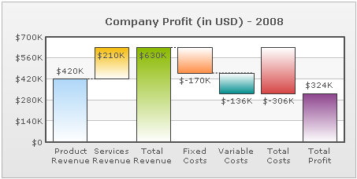
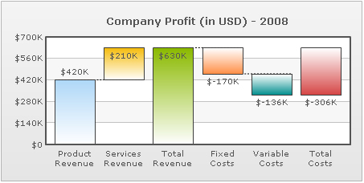

In this section, we will guide you through the various aspects of a waterfall chart.
A waterfall chart allows you to set different colors for the positive and negative columns of the chart. To do so, you just need to set a distinct color for the positive and negative columns respectively and the chart will automatically color-code the corresponding dataplots as shown below:

This can be achieved by setting the positiveColor and negativeColor attributes in the following manner:
<chart positiveColor='16B920' negativeColor='D30303' ... >
FusionCharts also gives you the option to show columns indicating cumulative or non-cumulative sum at any point in the chart. That means, you can opt to show a sum column after any data point. To create a cumulative sum column, you need to add the following <set> element at the point where you intend to show the sum column:
<set label='Summation Column Label' isSum='1' />
To display a non-cumulative sum column, use the cumulative attribute in the following manner:
<set label='Summation Column Label' isSum='1' cumulative='0' />
In the image below, "Total Revenue" column is a cumulative sum column and "Total Costs" column is a non-cumulative sum column.

By default, FusionCharts shows a total column (indicating the sum of all the columns on chart) as the last column of the chart. If you do not wish to show the last column as sum, set:
<chart showSumAtEnd='0' ...>
This is how a waterfall chart looks without the summation column:

If you wish to change the label of last sum column, use:
<chart sumLabel='My custom label' ...>
In our example chart, we have changed the label of our last sum column to "Total Profit".
Waterfall charts, by default display connector lines between two consecutive columns which helps in indicating the nature of transition (i.e. positive or negative). The appearance of connector lines can be customized using the following attributes:
| Attribute Name | Type | Description | Example | Sample Image |
| showConnectors | Boolean | Lets you set whether to show connector lines in the chart. By default this attribute is set to 1. | showConnectors='0' | |
| connectorColor | Hex Code | Lets you set a color for the connector line . | connectorColor='F55858' | |
| connectorAlpha | Numeric Value (0-100) | Lets you set the alpha of the connector lines. | connectorAlpha='45' | |
| connectorThickness | Numeric Value | Lets you set the thickness of the connector lines. | connectorThickness='2' | |
| connectorDashed | Boolean | Lets you set whether the connector line should appear as dashed. | connectorDashed='1' | |
| connectorDashLen | Numeric Value | If the connector line is to appear as dashed, this attribute lets you define the length of each dash. | connectorDashLen='5' | |
| connectorDashGap | Numeric Value | If the connector line is to appear as dashed, this attribute lets you define the gap between each dash. | connectorDashGap='5' |